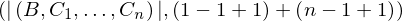

Expression of type Equals¶
from the theory of proveit.logic.booleans.conjunction¶
In [1]:
import proveit
# Automation is not needed when building an expression:
proveit.defaults.automation = False # This will speed things up.
proveit.defaults.inline_pngs = False # Makes files smaller.
%load_expr # Load the stored expression as 'stored_expr'
# import Expression classes needed to build the expression
from proveit import B, C, ExprRange, IndexedVar, n, x
from proveit.core_expr_types import Len
from proveit.logic import Equals
from proveit.numbers import Add, Neg, one
In [2]:
# build up the expression from sub-expressions
sub_expr1 = Neg(one)
expr = Equals(Len([B, ExprRange(x, IndexedVar(C, x), one, n)]), Add(Add(one, sub_expr1, one), Add(n, sub_expr1, one))).with_wrapping_at(1)
Out[2]:
expr: 
In [3]:
# check that the built expression is the same as the stored expression
assert expr == stored_expr
assert expr._style_id == stored_expr._style_id
print("Passed sanity check: expr matches stored_expr")
In [4]:
# Show the LaTeX representation of the expression for convenience if you need it.
print(expr.latex())
In [5]:
# display the expression information
expr.expr_info()
Out[5]:
| core type | sub-expressions | expression | |
|---|---|---|---|
| 0 | Operation | operator: 1 operands: 2 | |
| 1 | Literal |  | |
| 2 | ExprTuple | 3, 4 |  |
| 3 | Operation | operator: 5 operand: 8 |  |
| 4 | Operation | operator: 14 operands: 7 |  |
| 5 | Literal |  | |
| 6 | ExprTuple | 8 |  |
| 7 | ExprTuple | 9, 10 |  |
| 8 | ExprTuple | 11, 12 |  |
| 9 | Operation | operator: 14 operands: 13 |  |
| 10 | Operation | operator: 14 operands: 15 |  |
| 11 | Variable |  | |
| 12 | ExprRange | lambda_map: 16 start_index: 21 end_index: 17 |  |
| 13 | ExprTuple | 21, 18, 21 |  |
| 14 | Literal |  | |
| 15 | ExprTuple | 17, 18, 21 |  |
| 16 | Lambda | parameter: 23 body: 19 |  |
| 17 | Variable |  | |
| 18 | Operation | operator: 20 operand: 21 |  |
| 19 | IndexedVar | variable: 22 index: 23 |  |
| 20 | Literal |  | |
| 21 | Literal |  | |
| 22 | Variable |  | |
| 23 | Variable |  |